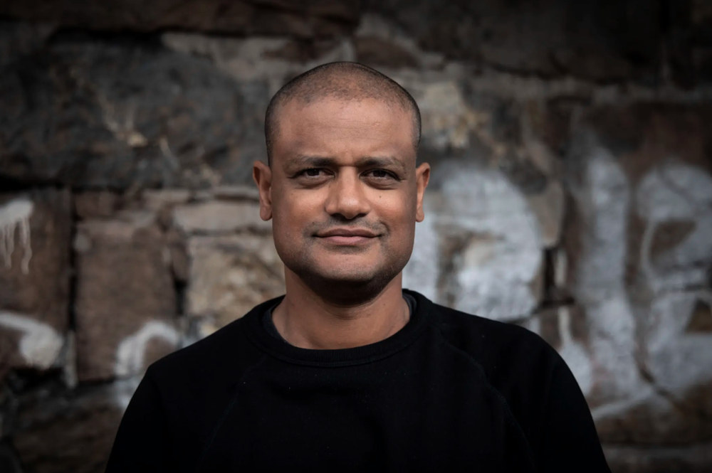

Om meg

Jeg har 15 år bak meg som journalist i VG og Aftenposten. Deretter bygget jeg Shifter i ti år, Norges største publikasjon for startups, før jeg solgte selskapet til Schibsted i 2024.
I dag bygger jeg Operators, en podcast og et nyhetsbrev der jeg intervjuer gründere og selskapsledere om hvordan de faktisk bygger selskapene sine.
Ved siden av hjelper jeg CEO-er og ledergrupper å finne ut hva som holder veksten tilbake, og samle seg om hva de skal gjøre med det.
Hva folk sier om samtalene mine.
«Stiller gode, kritiske spørsmål, samtidig som han ivaretar god stemning. Har satt seg godt inn i bakgrunn til den som blir intervjuet.»
Lytter, Apple Podcasts
«Det er så ofte at jeg har tenkt at jeg gjerne skulle hørt hva gjester i podcaster egentlig mener, og hver gang jeg tenker nettopp dette i denne podden så stiller programleder de gode oppfølgingsspørsmålene. Altfor ofte hører jeg podcaster der hosten ikke følger opp uklare svar.»
Lytter, Apple Podcasts
«Har en fantastisk måte å intervjue interessante personer på ved å spørre hvorfor og hvordan, og lar dem ikke slippe unna med svada.»
Lytter, Apple Podcasts